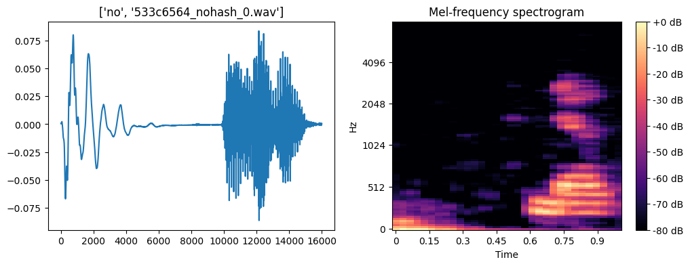
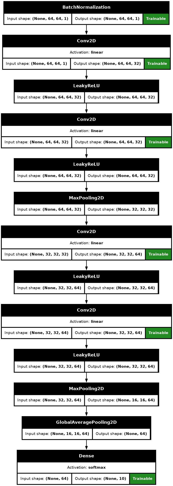
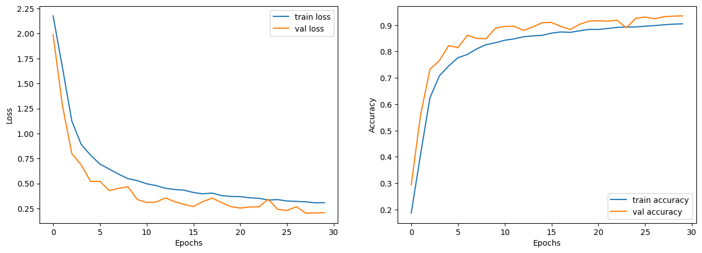
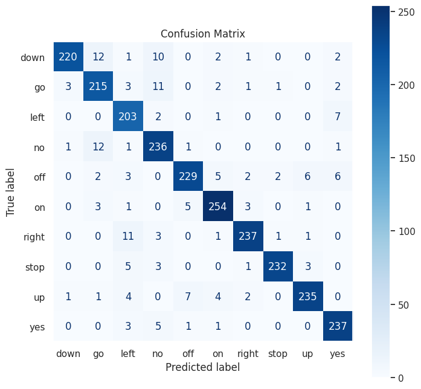

Speech Command Classifier
Can a classifier be as good as a human at classifying speech commands?
Here, we explore a workflow to build a speech command classifier based on a Kaggle dataset. The workflow is implemented as a Kaggle notebook. The dataset contains 20 main words that are spoken at least 5 times by different people. These are commands spoken by people for a duration of 1 second. There are 10 additional words spoken by people. These additional words can be optionally used to generalize the classifier and prevent overfitting.
The goal of the workflow is to train the classifier in a robust enough manner to give the same (training level) accuracy on words spoken by people not associated with the dataset.
Approach
Our dataset contains audio commands uttered by different speakers with multiple commands uttered by the same speaker. In this situation, special care has to be taken for trifurcation of the dataset to prevent data leakage.
A data loader is essential to manage memory and training speed requirements. Audio augmentation is also essential to make the classifier smart enough to recognize commands by speakers not in the dataset or uttered in a noisy environment.
As mentioned, our dataset consists of 20 core commands and 10 auxiliary commands. We remove commands labelled from “zero” to “nine” and the auxiliary commands for the sake of keeping our time and resource requirements at a reasonable level.
We now delve deeper into our implementation.
The need for a word filter
A word_filter() function removes the word command files we don’t need from
the data file list. We exploit the structure of the dataset where we have a folder to
command correspondence.
Trifurcation of the dataset Our dataset has to be split into training, testing and validation sets based on typical split ratios – we use 80-10-10. Most importantly, we have to maintain uniformity in our trifurcation and make sure that all words are equally distributed in the split out dataset. We use the property1 of the hash function to distribute the audio files into the three sets with some special considerations. We have to split our dataset based on the speaker rather than on the words. This ensures equal availability of words (labels) in the train, validation and test sets ensuring that the utterances by a particular speaker of a specific command, all fall into one set completely. This prevents data leakage and also ensures stable trifurcation even if the dataset is augmented later.
This approach has many benefits such as a stable split when new data is added to the dataset. There is no leakage of data from the test and validation sets into the training set when this approach is used. Changes in the data is not going to disturb the splitting and is always stable.
Feature extraction/engineering Features are extracted as mel-spectrograms. Thanks to them, just as we use CNN in image classification, we can treat sound as ‘pictorial’ representations and analyze them as images. The pictorial representations are our spectrograms. The spectrogram is a 1 layer image with pseudo colouring.

The y-axis of the spectrogram is a (human-perceived) pitch scale denoted by ‘mels’ and the x-axis denotes the time scale. The color map shows the energy in a particular mel-band at a specific instance of time indexed by the color scale on the right.
Data Augmentation Data augmentation is absolutely essential for robust training. We have implemented three levels of data-augmentation keeping in mind resource requirements. The classifier can be trained with the following three levels of augmentation:
- no augmentation at all: this is the default way in which you train your classifier by feeding it with unaugmented spectrograms of unaugmented audio.
- basic augmentation: use this if you want to feed unaugmented audio followed by augmented spectrogram to your classifier.
- full augmentation: You can fully augment your data by first augmenting the audio track, generating a plain spectrogram, augmenting the spectrogram, and feeding it to the classifier.
Using a batch loader
Data loading can be a bottleneck for which it is safer to use options given
by the Keras multithreaded library. By inheriting from
the Keras Sequence class and enabling multiprocessing, we can do our bit
to speed up the loading and advance batch preparation.
class AudioDataLoader(Sequence):
def __init__(self, filepaths, batch_size, shuffle=True,aug=None):
super().__init__(use_multiprocessing=True, workers=8, max_queue_size=20)
# aug will be passed onto audio augmenter; can be None, 'basic' or 'full'.
self._filepaths = filepaths # All files, filepath includes label
self._batch_size = batch_size
self._labels = [fname.split("/")[-2] for fname in self._filepaths]
self._shuffle = shuffle
self._aug = aug
# Create a label lookup to encode string labels to one-hot
self.label_lookup_ = StringLookup(
vocabulary=sorted(list(set(self._labels))),
output_mode="one_hot",
num_oov_indices=0
)
self.on_epoch_end() # shuffle data before starting
def _prep_labels(self,labels): # Takes list of text labels, returns one-hot encoded list
return self.label_lookup_(labels)
def __len__(self): # gives the number of batches
return int(np.ceil(len(self._filepaths) / float(self._batch_size)))
def on_epoch_end(self):
'shuffle data'
if self._shuffle:
self._labels, self._filepaths = shuffle(self._labels, self._filepaths, random_state=34)
def __getitem__(self, idx):
batch_x = self._filepaths[idx * self._batch_size:(idx + 1) * self._batch_size]
batch_y = self._labels[idx * self._batch_size:(idx + 1) * self._batch_size]
prepped_batch_x = np.array([np.expand_dims(prep_audio(*librosa.load(fpath,sr=None),self._aug),axis=2) for fpath in batch_x])
prepped_batch_y = self._prep_labels(batch_y) #.numpy()
return prepped_batch_x, prepped_batch_y
Description of the neural network
We make use of a CNN for our classifier. Every sound in our dataset is converted into ‘pictorial’ representations called spectrograms which can then be analyzed like images. Our CNN consists of convolutional layers interlaced with LeakyReLU layers, Global max pooling layers and Global average pooling layers. LeakyReLU helps in convergence by preventing a dead neuron. We favour Global average pooling as it prevents overfitting. The input shape of the neural network is (64,64,1) which is the same as our spectrogram size. The image is downsampled each time it passes through the max pooling layer and flattens the output after it passes through the Global average pooling layer.
Since it is difficult to estimate the number of training epochs, we start with a high enough number and install two callbacks to assist our training process and stop at the right time:
- EarlyStopping
- ReduceLROnPlateau

Training/Validation loss curves
The training and validation data get loss and accuracy values which can be plotted in two graphs. Both of them show the extent of how loss and accuracy improve over time and where they stop showing improvement. The loss curve does not show any signs of overfitting.

Decoding the CNN output
The following code fragment shows how we proceed from predictions (floating point numbers from the softmax output), to class labels.
# Get the predictions
predictions = model.predict(x=test_x, batch_size=16)
# Convert softmax output to labels
y_pred_labels = tf.one_hot(tf.argmax(predictions, axis = 1), depth = 10)
# or the following
#tf.one_hot(np.argmax(predictions.tolist(),axis=1), depth = 10)
y_pred_labels
Confusion matrix
We construct a 10x10 confusion matrix for our labels. The precision
of each word can be seen by dividing the values in the dark squares which are our
true positives with the total of each column. The precision says how our classifier
can identify words just as a human would by hearing. Better precision translates
to better identification capability.
The word ‘on’ has the highest precision value of 254/(254+5+1+2+2+1+4+1)=0.94 and the
word ‘left’ has the lowest precision value of 203/(203+1+3+1+3+1+11+5+4+3)=0.86.

Conclusion
Sound classification has a close resemblance to image classification. The precision of our classifier bears a relation to how humans listen and identify spoken words – it seems at least as good!
Thanks to spectrograms, a CNN can classify sound. It is far easier on our part to deal with them rather than with waveforms. You can see the implementation in my Kaggle notebook.
-
Hashing functions ensure uniform distribution of keys across the hash value space. The size of the hash is too big and is reduced to a smaller value using the modulo function. Then, the value is scaled to between 0 to 100 for easy percentage-wise splitting. ↩︎